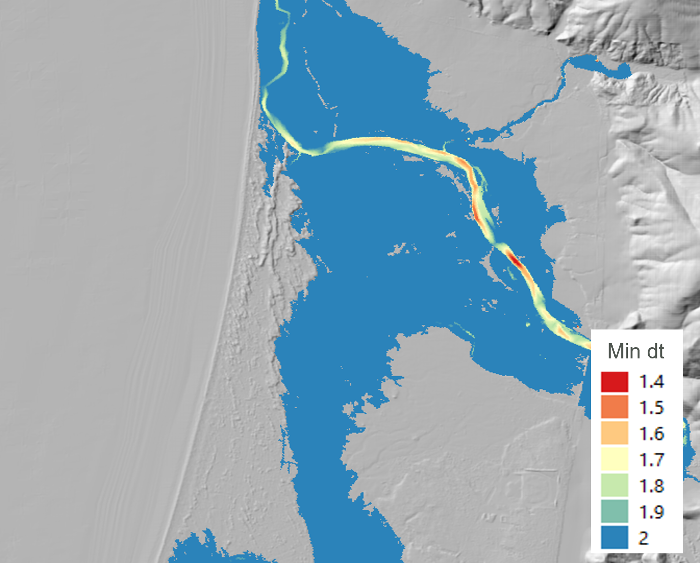
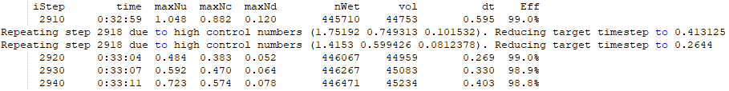
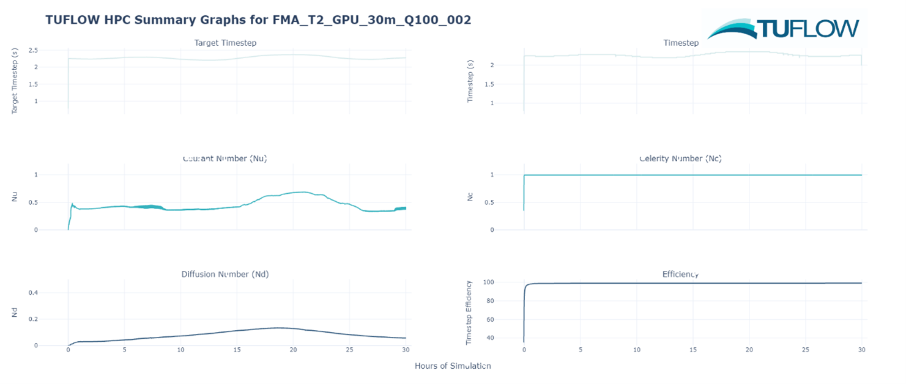
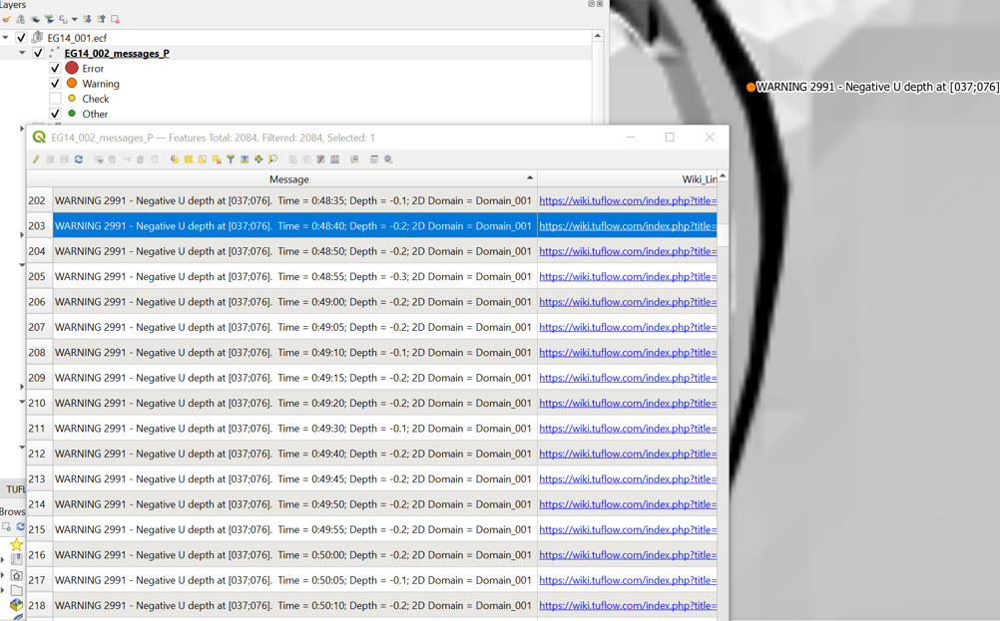
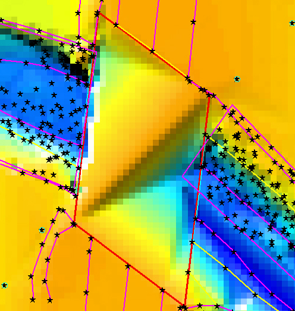
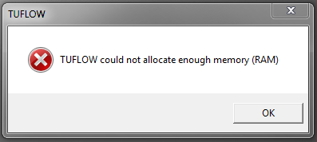
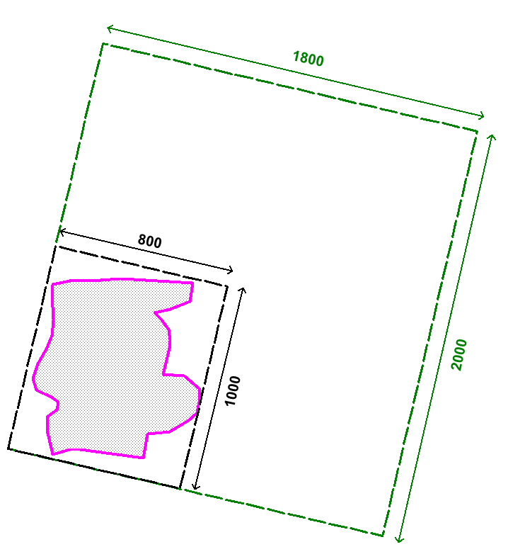

| Item | Description | Checked |
|---|---|---|
Modelling Log |
A modelling log is highly recommended and should be a requirement on all projects. The log may be in Excel, Word or other suitable software. A review of the modelling log is to be made by an experienced modeller. It should contain:
|
|
File Naming, Structure and Management |
A review of the data file management should check:
|
|
2D Cell Size and 1D resolution |
Check whether the 2D cell size is appropriate to reproduce the topography needed to satisfactorily meet the objectives of the study (see Section 3.2), and that the 1D spatial resolution is appropriate to reproduce the water longitudinal surface gradient. |
|
Topography |
The topography review should focus on:
|
|
Bed Resistance Values |
Bed resistance values are to be reviewed by an experienced modeller. The review should focus on checking:
The reviewer should be looking for:
|
|
Calibration / Validation |
Check that the model calibration or validation is satisfactory in regard to the study objectives. Identify any limitations or areas of potential uncertainty that should be noted when interpreting the study outcomes. |
|
Mass Conservation |
In addition to the mass balance reporting (see Section 14.7), it is good practice to carry out independent mass checks. Standard practice is to place 2d_po flow lines (see Section 11.3.2.1) in several locations throughout the model. They are typically aligned roughly perpendicular to the flow direction. The locations should include lines just inside each of the boundaries. Other suitable locations are upstream and downstream of key structures, through structures and areas of particular interest. The flows are graphed and conservation of mass checked (i.e. the amount of water entering the model equals the amount leaving allowing for any retention of water in the model). Ensure that the flows from any 1D channels crossed by a 2d_po line are also included in the mass check, and that the 2d_po flow lines are digitised so that they cross the 1D channel where there is a change in colour of the linked 2D HX cells as shown in the 1d_to_2d_check files or _TSMB1d2d layers. In dynamic simulations, an exact match between upstream and downstream will not occur due to retention of water, however, examination of the flow lines should reflect this phenomenon. For steady-state simulations, demonstration of reaching steady flow conditions is demonstrated when the flow entering the model equals the flow leaving the model. |
|
Hydraulic Structures |
Head losses through a structure need to be validated through:
Simple checks can be made by calculating the number of dynamic head losses that occur and checking that this is in accordance with what is expected (see Section 7.2.9). It is important to note that contraction and expansion losses associated with structures are modelled very differently in 1D and 2D schemes. 1D schemes rely on applying form loss coefficients, as they cannot simulate the horizontal or vertical changes in velocity direction and speed. 2D schemes model these horizontal changes and do not require the introduction of form losses to the same extent as that required for 1D schemes. However, 2D schemes do not model losses in the vertical or fine-scale horizontal effects (such as around a bridge pier) and may require the introduction of additional form losses. See Syme (2001b) for further details. |
|
Eddy Viscosity |
Check that the eddy viscosity formulation and coefficient is appropriate (see Section 7.3.3). |
16 Quality Control and Troubleshooting
Proficient and effective 1D and 2D hydrodynamic modelling is a skill that takes time to develop. During the development of these skills, most modellers may produce “unhealthy” models at some point (i.e. models that are problematic in that they regularly go unstable, produce strange flow patterns, etc.). Whilst, in most cases, the reasons for problems are due to the quality of input data, other reasons include poor model schematisation, and, of course, human error. With mentoring from experienced modellers, and/or following an iterative testing process, unhealthy models can be corrected to become healthy, and hydrodynamic modelling skill levels greatly enhanced. This section attempts to convey some ways to identify problematic areas within an unhealthy model, and solutions to resolving the problem.
16.1 Model Health
Due to the computational differences associated with the two solvers, TUFLOW Classic and TUFLOW HPC, there are slightly different approaches to assess and deal with model health issues in each. The following sections will outline the characteristics of unhealthy models in TUFLOW Classic and HPC separately, though the general approach to troubleshooting is very similar.
16.1.1 TUFLOW Classic
Unhealthy TUFLOW Classic models usually exhibit one or more of the following characteristics:
- The model only remains stable if using a smaller than recommended timestep.
- Poor mass error (\(> \pm 1 \%\)) as indicated by the “CE” percentages displayed to the Console Window (see Section 14.1.1), and output to the various mass balance files as described in Section 14.7.
- “Unnatural” fluctuations of flow in/out and change in volume values (i.e. the Qi, Qo and dV values displayed to the Console Window) discussed in Section 14.1.1.
- Locations in the model that repetitively have negative depth WARNINGs. These repeatedly appear as a message such as: “WARNING 2991 - Negative U depth at [030;088], Time = 0:01:30, Depth = -0.4…”. The occurrence of the message several times at a location is usually not an issue (this means that the model experienced a short and slight numerical disturbance), however, if it repeatedly occurs for a period of time, it is good practice to resolve the source of the problem as this numerical disturbance may cause mass errors, possibly forcing the use of too small a timestep, and may initiate an instability in a future simulation.
If one or more of the above apply, the model needs to be reviewed and the cause of the unhealthy behaviour identified. This can be a daunting and difficult task for inexperienced modellers, however, the guidelines in the sections below are hopefully of some assistance.
16.1.1.1 Timestep
For the majority of TUFLOW Classic flood models, the 2D Timestep in seconds should be somewhere between \(\frac{1}{2}\) to \(\frac{1}{5}\) of the 2D Cell Size (in metres). For example, a 10m 2D grid should use a timestep of between 2 and 5 seconds. 2D domains with predominantly sub-critical flow usually can have timesteps larger than those for steeper models with significant areas of supercritical flow.
For coastal models, models with large cell sizes (>50m) or models with significant areas of deep water (>20m), the above rule-of-thumb may not apply with the timestep often being smaller. This is due to the Courant condition described in Section 3.4.
There is a tendency for hydraulic modellers to “solve” an instability by reducing the model timestep. Whilst this may “work”, if the required timestep is less than the above mentioned recommended minimums, it is usually not solving the fundamental cause of the model’s poor hydraulic performance or instability. Using too small a timestep can mask fundamental problems in the input data, and hide mistakes in the construction of the model. For example, if the user accidentally applies a topography modifier with an elevation -99m below the surrounding cells, a small timestep may “remove” the instability but does not resolve the issues in the input data.
Using a too large a timestep will cause mass errors. If the model runs stable without any negative depth warnings, yet the cumulative mass error is poor throughout the simulation, this is often an indication that the 1D and/or 2D timesteps are too large.
16.1.2 TUFLOW HPC
TUFLOW HPC uses an explicit finite volume scheme. It uses an automatic adaptive timestep routine which is unconditionally stable and provides 100% 2D mass conservation. TUFLOW HPC will not show a mass balance error like TUFLOW Classic but rather, in situations where the stability is threatened, the model timestep is reduced. In recognition of this behaviour, reviewing the minimum timestep is useful in determining the health of a TUFLOW HPC model. For TUFLOW HPC, the *_dt_Min map output file can be used to identify the specific location that is requiring the minimum timestep to achieve simulation stability. This is useful output to help identify where the modeller should be reviewing model inputs and model schematisation.

Unhealthy TUFLOW HPC models usually exhibit one or more of the following characteristics:
- A large number of repeat timesteps within the Console Window. The total number of repeated timesteps is recorded in the Simulation Summary section at the end of the .tlf file, and is reported to the _messages layer. Repeated timesteps are an indication that the TUFLOW HPC 2D solution is numerically “on-the-edge”. Models that have a high number of repeated timesteps should be sensitivity tested by reducing the control number limits using the Control Number Factor command.
- The model only remains stable if using an excessively small timestep.
- Oscillating timesteps and controls numbers as shown in the *.hpc.dt.csv output to the log folder.
- “Unnatural” fluctuations of flow in/out and change in volume values (i.e. the Qi, Qo and dV values displayed to the Console Window) discussed in Section 14.1.1.
Like TUFLOW Classic, if one or more of the above apply, the model needs to be reviewed, the cause identified and rectified.
Although TUFLOW HPC is 100% mass conservative and will not produce any mass error in the 2D, it is still important to review the Mass Error from a simulation. Mass Error can occur in poorly configured models when coupling HPC with 1D elements (either associated with the 1D/2D linking or in the 1D scheme itself).
16.1.2.1 Timestep
The TUFLOW HPC solver, by default, uses adaptive timestepping to progress through the simulation. The timestep is adjusted so that it complies with the mathematical stability criteria of a 2D explicit solution. Due to the underlying solution scheme, TUFLOW HPC typically uses a smaller timestep than Classic. As a general rule, a healthy TUFLOW HPC timestep is roughly \(\frac{1}{10}\) of a TUFLOW Classic healthy timestep (i.e. for a cell size of 10m, a healthy TUFLOW Classic timestep would be 2 to 5s, and a healthy TUFLOW HPC timestep would be between 0.2 to 0.5s).
There are three primary processes that determine the maximum timestep that an explicit solution of the Shallow Water Equations can use:
- Courant Number, Nu: The Courant number relates to velocity relative to the cell size. Higher velocities will trigger this as the timestep control.
- Wave Celerity Number, Nc: The Celerity Control number relates to water depth relative to cell size. Energy can pass through deeper water faster than shallow water, as such deep water will trigger this control.
- Diffusion Number, Nd: The diffusion control relates diffusion of momentum relating to the sub grid viscosity. Small cells subject to deep water will trigger this control.
Further description of these control numbers is provided on the TUFLOW Wiki HPC Adaptive Timestepping page.
TUFLOW will use the highest timestep possible without exceeding the limits associated with each of the control numbers. The .hpc.tlf log file records the model timestep, control numbers and the volume of water in model at each timestep. It also shows repeated timesteps if the control number limits were exceeded or there is a significant change in control numbers (more than 20%). If a model has a sudden change in rainfall between timesteps, or has a warmup period with small flow rate before a large inflow then repeated timesteps are possible. However, if there is a high occurrence of repeating timesteps when the boundary inflows are smooth, this could be an indicator of model instability. The total number of repeated timesteps is also recorded in Simulation Summary of the .tlf file.

It is possible to plot the time-varying control number settings from the *.hpc.dt.csv that is output to the log folder when running a TUFLOW HPC simulation. This can be done using spreadsheet software such as Excel, or a scripting language such as python. An example using a drag and drop tool, the TUFLOW Summary Dashboard, is shown in Figure 16.3. The tool is available on the TUFLOW Gitlab User Group.

The two key features that modellers should look for in the hpc.dt.csv output, is erratic oscillation of the timestep values and extremely low timesteps. If an oscillating timestep or an unusually low timestep is observed in the HPC dt time series, it is important to review the associated value for each control number (Nu, Nc and Nd). This will allow the modeller to determine which hydraulic condition is limiting the timestep. Since the 2023-03 release of TUFLOW, it is also possible to provide map output for the three control number using the Map Output Data Types command which can also help identify model features leading to reduced timesteps.
16.1.3 Healthy Model Indicators
A summary of healthy model indicators is provided at the end of the simulation on the display console, and at the end of the .tlf file. A selection of these indicators are also written to the “_ TUFLOW Simulations.log” files – see Section 14.3. The indicators are discussed in Table 16.1 below.
These model health reporting items should be used in conjunction with good model review practices. They are a set of indicators of various model health parameters. They are not definitive proof that a simulation was or was not healthy.
| Model Health Reporting Item | Description | Solver |
|---|---|---|
Total Negative Depths |
The occurrence of negative depths at 1D nodes or 2D cell sides is an indication that the solution has not converged or has over-stepped at that location and time. WARNING 1991 for 1D nodes and WARNING 2991 at 2D cell mid-sides are issued each time a negative depth greater than -0.1m occurs. The location of these warnings can be viewed using the _messages GIS layer. From a healthy model perspective, the occasional negative depth is not necessarily a concern, but repeat occurrences at the same location are an indication of a potential issue. See Section 16.2.2 for further discussion. Negative depths may often precede an instability. |
Classic/HPC |
WARNINGs and CHECKs prior to and during simulation |
Number of CHECKs and WARNINGs issued. At key stages of a project, review any CHECKs and WARNINGs, and if needed, resolve any issues, particularly for WARNINGs. If a CHECK or WARNING is not in the _messages layer, this means that it could not be located geographically and only occurs in the .tlf file (search the .tlf file to review them). |
Classic/HPC |
Peak Flow In and Out (m\(^3\)/s) |
Review these numbers in the sense that they are in accordance with your expectations. Usually the “Peak Flow In” exceeds the “Peak Flow Out” for flood simulations due to the flood wave being attenuated as it travels through the model. Note, at boundaries where a circulation develops, there will be flow in and out and these amounts will contribute to the Flow In and Out of the model as reported here and in the _MB.csv files. This behaviour is indicative of a boundary line that is not well aligned (perpendicular to flow) and possibly should be changed. |
Classic |
Volume at Start and End (m\(^3\)) |
The volume of water in the model at the start and end of the simulation. Review these numbers, and confirm they are sensible. A very large residual volume at the end of the simulation may indicate that the simulation was not run for long enough, for example, the flood may not have reached its peak. The time of peak water level is also a good indicator of this, if the time of peak water level is the same as the end time of the simulation, the simulation has likely not run long enough for the flood waters to peak. |
Classic/HPC |
Volume In and Out (m\(^3\)) |
The total volume of water in and out of the model during the simulation. Review these numbers to confirm they make sense. Usually the volume out is less than the volume in, as the model has a residual amount of water left in it at the end of the simulation. |
Classic/HPC |
Volume Error (m\(^3\)) Final Cumulative ME% |
Volume Error is the loss or gain in water over the course of the simulation. Volume Error is equal to: (Total Volume In - Total Volume Out) - (Volume at End - Volume at Start) The Volume Error % value is the Volume Error divided by the Volume In + Out. The Final Cumulative Mass Error % is calculated throughout the simulation using a similar formula, so should be similar to the Volume Error %. Ideally these values should be less than 1%, but 2 or 3% can be acceptable depending on the objectives of the modelling. Values exceeding 3% usually indicate there are significant problems with the model. |
Classic/HPC |
Peak +ve and -ve dV (m\(^3\)) |
dV is the change in volume over the whole model in one timestep, and the values shown here are the peak positive and negative dV values. **Note: these values will be different to those shown on the display console or in the _MB.csv files** if the Screen/Log Display Interval or Mass Balance Output Interval are not set to the computational timestep. The time in hours that the Peak dV values occurred is also shown. |
Classic |
Peak ddV (m\(^3\)) (% of Peak dV) |
Peak ddV is the maximum (positive or negative) change in dV over one timestep, and the % value is the % of the maximum Peak dV value. A large ddV value or % indicates the model may have been unsteady at some point. This may not be unusual in a model with complex hydraulics, however, it is another indicator of whether there may be somewhere in the model that needs reviewing. |
Classic |
Peak Cumulative ME |
The peak CME% value that occurred. As discussed above, ideally this value should be less than 1%, though larger values can be acceptable depending on the objectives of the modelling. For example, higher numbers may occur during the intimal wetting of a Classic model, though still have a negligible impact on the overall model results. |
Classic |
Values under “Qi+Qo > 5%” |
The values under “Qi+Qo > 5%” are for the period of the simulation when the flow in and out exceeded 5% of the peak flow in and out, and are representative of the bulk of the simulation once the flood wave has begun flowing. These indicators are designed to exclude an initial period of any unsteadiness at the start of the simulation that may occur in some models. |
Classic |
HPC HCN Repeated Timesteps |
TUFLOW HPC repeats timesteps if the control number limits are exceeded or if there is a significant change in control numbers (>20%). The three control numbers (Courant Number, Wave Celerity Number and Diffusion Number) determine the maximum timestep for the TUFLOW HPC adaptive timestepping. They are reported in the tlf and in the hpc.dt.csv. In general terms:
A repeat timestep on its own is not necessarily an indication of an unstable model. Oscillating control numbers may be indictive of an unstable TUFLOW HPC model. |
HPC |
HPC NaN Repeated Timesteps |
Each TUFLOW HPC timestep is tested for the occurrence of a NaN (Not a Number) which can occurs due to undefined mathematical calculations such as a divide by zero or square root of a negative number. The occurrence of a NaN is indicative of a sudden instability. |
HPC |
HPC NaN Warning 2550 |
Provides the cumulative sum of the number of TUFLOW HPC timestep corrections (indicated by WARNING 2550) have been made in order for the TUFLOW HPC solution to remain stable. Whilst not always sign of an unstable model, it is worth reviewing especially in the case of a large number of repeated timesteps. |
HPC |
16.2 Troubleshooting
The most common cause for an unhealthy model is poor underlying topography. In the case of 2D domains, the quality of the Digital Terrain Model (DTM) is often the problem, and investing time to create truly representative, well-constructed, DTMs is highly recommended from both the modelling perspective and the quality of the inundation mapping.
For 1D domains, topographic inaccuracies in cross-section data and at structures is often the source of problems, although model schematisation can sometime also be the source of issues. As a general statement, 1D modelling is more of an “art” than 2D modelling, due to the need for user judgement associated with the selection of cross-section locations, and schematisation of the 1D domain.
For 1D-2D models, often poor stability of the 1D domain can lead to instabilities in the combined model at higher flows when flow comes out of bank. It is suggested that the 1D model is tested to ensure stability prior to coupling with the 2D domain where possible. Care should also be taken in the schematisation of any 1D-2D linkages.
Take an iterative approach to solving problems. As a model stability issue may cascade to cause others, when searching through the _messages GIS file, resolve the problems in order of occurrence (i.e. in the order the messages appear in a QGIS attributes table, top to bottom). Solving issues earlier may automatically resolve the errors reported later in the simulation
16.2.1 General Comments
When building a model, be proactive about ensuring the data is as complete as possible and accurately reflects reality. For 1D stormwater pipe network data, use the 1D Integrity Tool is recommended to ensure data is consistent and free of common errors, prior to use within a TUFLOW model simulation. The TUFLOW ‘test’ mode can also be used to test the data inputs without the simulation phase, see Section 13.4.2.1 for more details. This can be used in the initial model testing phase without using the high specification modelling hardware that is often required for the hydrodynamic simulation.
Problems in the input data that get through this initial integrity check are readily identified by using Write Check Files command in the .tcf file and/or Write Check Files in the .ecf file to generate GIS check files. These files represent the final combination of the 2D and 1D data inputs, and are excellent for identifying data input problems. A detailed description of all available check files is provided in the TUFLOW Wiki Check Files page.
If the model becomes unstable, TUFLOW writes output data for the last computed timestep. The location of stability is easily found by viewing the results for the last timestep. Very large velocity vectors and/or excessively high or low water levels usually occur in the vicinity of the instability.The instability can also be located using the _messages.shp / .gpkg files (see Section 14.4.5).
Always search the .tlf files for the terms, “UNSTABLE”, “WARNING”, “CHECK” and “ERROR”. ERRORs stop the simulation, while WARNINGs and CHECKs do not. Note, it is possible that latter errors are caused by earlier warnings, and search through the .tlf files, or start at the beginning of the attributes within the _messages.shp/.gpkg file, resolve the earlier errors first, rather than working backwards from the final error which resulted in the instability.
The Troubleshooting section of the TUFLOW Wiki TUFLOW Messages page contains a comprehensive database of TUFLOW “CHECK”, “WARNING” and “ERROR” messages. Each “CHECK”, “WARNING” and “ERROR” message has its own Wiki page documenting a description of the message, and suggestions how to address the message.
16.2.2 Instability Identification
Instabilities usually start with one or a few computational points “bouncing” as a result of poor convergence of the mathematical equations being solved. To help identify the start of an instability, negative depth warnings are issued if the depth in a 2D cell (usually TUFLOW Classic only) or a 1D node falls below ‑0.1m. Negative depth warnings are usually a pre-cursor to an instability of the true expected solution. It is not uncommon, particularly in areas of rapid wetting and drying for negative depths to occur before the computational point is made dry (inactive). Hence a buffer of -0.1m is used before reporting a WARNING.
The WARNING messages are sent to the _messages.shp / .gpkg file (see Section 14.4.5). Import or open this file in GIS software to identify the location of the negative depth calculation. If the number of these warnings are substantial (e.g. if a model remains stable but with minor instabilities), select some of the first negative depth warnings in the attribute data and display just those. The warnings are in order of occurrence. By tracing through the negative depth warnings in the vicinity of the instability, the original source of the instability can usually be located.

TUFLOW also uses defined 1D and 2D water level threshold values to trigger an instability message. The commands associated with these thresholds are Depth Limit Factor (1D domains) and Instability Water Level (2D domains).
16.2.2.1 1D (ESTRY) Domains
As advised in Section 16.2.2 for 2D domains, the location of an instability should be determined by investigating where the WARNING 1991 messages occur. Common options for helping resolve unstable or problematic 1D nodes and channels are:
- If a 1D node or channel has become unstable, causing a simulation to crash yet the water levels appear stable in the results, check the Depth Limit Factor setting. It may be that the water level is simply exceeding the maximum depth of the node/channel times the Depth Limit Factor.
- If a 1D node has repeated WARNING 1991 messages, and/or has a mass error problem, check that the cross-section/structure dimensions of adjoining channels are correct and appropriate. Common causes are:
- A large change in cross-sectional area for successive channels. If the channel is natural, then it is likely that one or more of the cross-sections are not representative of the real situation.
- One or more incorrect upstream and downstream bed levels. Import the 1d_inverts_check GIS file, label the Invert attribute, and cross-check that the inverts are correct.
- A very steep channel entering a gently sloping channel. If this is the real situation, then additional 1D channels providing a higher computational resolution may be needed, alternatively inserting a structure at the transition may help.
- If there is a sudden change in 1D flow area, then a more appropriate and more stable approach would be to insert a structure representative of the situation to model the energy losses associated with the contraction and/or expansion of the water.
- Trial using a smaller 1D Timestep to establish whether the problem is timestep related. If it is not timestep related, reducing the timestep should have little change in results. In some problematic models, 1D instabilities may actually magnify with a reducing timestep.
- A common solution is to add additional storage to the 1D node. This can be done by using the 1d_nwk Length_or_ANA attribute described in Table 5.31 or using Minimum NA, Storage Above Structure Obvert or Minimum Channel Storage Length. Usually adding additional storage at problematic nodes does not adversely affect the results (unless there are a lot of problematic nodes), however, this should be checked through sensitivity testing (this can be carried out by adding even more storage again and ascertaining the effect on the hydraulic results).
Besides investigating where the WARNING 1991 messages occur, the most effective approach to identify potential problem locations is to thematically map or categorise the _TSMB GIS layer using the ME_Avg_Abs attribute.
16.2.2.2 TUFLOW Classic
To identify problematic areas within a TUFLOW Classic 2D domain, the most common approach is to run the model at a reasonable timestep and investigate where the WARNING 2991 messages occur. If mass error is an issue in the 2D domain, the MB1 and MB2 outputs (see Map Output Data Types) and Table 11.4 may be of use.
Of particular note, models based on high quality DTMs are as-a-rule rarely problematic. However, if the DTM is rough or “bumpy” (as can be the case with air-borne laser DTMs), or has poor triangulation causing sharp ridges as illustrated in the images below, models based on these DTMs are much more likely to be problematic in/near these areas.

The following steps are useful to help identify and resolve the problem.
- Set the 2D Timestep to somewhere between \(\frac{1}{2}\) to \(\frac{1}{5}\) of the cell size (in metres).
- Run the model until it becomes unstable or has generated the WARNING 2991 messages.
- Import or open the _messages GIS layer.
- Within your chosen GIS package, view the _messages GIS layer in a tabular format and try to trace back from the “UNSTABLE 2999” messages to the initial “WARNING 2991” messages that were most likely the trigger for the instability.
- Select a few of these WARNINGs and locate them geographically in the GIS map window.
- Using the various _check GIS layers, carry out some fundamental checks. For example:
- 2d_zpt_check or _DEM_Z check file: Check the Zpt values are as you would expect. If the Zpt values are particularly “bumpy”, try smoothing the ones at/near the WARNING 2991 messages. Where the Zpts change in elevation rapidly (e.g. the outside bend of a river), deep ZU and ZV elevations can be problematic. If modifying the ZU and ZV values, tend to assign an elevation closer to the higher of the two ZC values either side of the ZU/ZV point. To modify the Zpts it is recommended to create a new 2d_zpt or 2d_zsh layer rather than editing the original data source for quality control purposes.
- 2d_uvpt_check or 2d_grd_check: check the Manning’s n values are as expected, if not identify why.
For reference, a detailed description of all available check files is provided in the TUFLOW Wiki Check Files page.
Other points to note for TUFLOW Classic 2D domains are:
- If the model becomes unstable quickly and the instability location is near a 2D water level boundary, check that the initial water level setting is compatible with the starting water level of the boundary.
- Direct rainfall modelling on high elevations(>100m) may experience unacceptable mass errors due to a floating point imprecision problem. These models need to use the double precision version of TUFLOW (see Section 13.3.2). In addition, the default Cell Wet/Dry Depth may need to be lowered from 0.002m to 0.0002m (when using Units == US Customary the equivalent would be lowering from the default of 0.007 to 0.0007ft) due to the substantial amount of sheet flow.
16.2.2.3 TUFLOW HPC
To identify problematic areas within a TUFLOW HPC 2D domain, the most common approach is to output the ‘dt’ map output (see Map Output Data Types and Table 11.4), and identify the locations where the lowest timestep (dt) values occur (see Figure 16.1). For those locations, check files are reviewed to search for data input issues. Of the check files, possibly the most useful for TUFLOW HPC is the _DEM_Z check file in the location of the _dt_min to assess the topography representation. If the topography doesn’t look realistic, it’s useful to open the zsh_zpt_check file to assess if there’s any topographic modifications made in this location, or whether there is an artefact in the input DTM datasets that is causing the irregularity. The TUFLOW styles can be applied to the zsh_zpt_check file check file to show different adjustments, red upwards arrows for increased elevation values, blue downwards arrows for decreased elevation values.
Other points to note for TUFLOW HPC 2D domains are:
- Non-perpendicular boundaries can provide instabilities in both TUFLOW Classic and HPC. Whereas in TUFLOW Classic they will likely lead to an unstable model, they are more challenging to pick up with TUFLOW HPC because of its unconditionally stability. One approach to review inflow boundaries in a TUFLOW HPC model is to a add 2d_po line immediately downstream of any boundary inputs. The PO results can then be used for detailed review of the model stability in that particular location.
- TUFLOW HPC simulates flow depth as its state variable and it does not suffer the same potential loss of precision as TUFLOW Classic when modelling direct rainfall. It is not a requirement to run a double precision version of TUFLOW HPC for direct rainfall applications. There are some situations in which TUFLOW HPC may benefit from double precision, for more information see Section 13.3.2.2.
16.2.2.4 1D/2D Links
Some common configuration mistakes associated with 1D/2D links, and recommendations to resolve them are:
- Using a mixture of connected HX and SX lines along a river bank can cause mass errors. This is not a recommended configuration. In these situations the 1D and 2D mass error reporting can appear satisfactory, however the overall model mass error is poor. HX connections are the recommended configuration to connect the 1D open channel to the 2D representation of the floodplain. The _TSMB1d2d GIS layer is useful for identifying mass error issues across 2D HX lines. Note, the units of the mass error values for this layer are presently in m\(^3\)s\(^-1\), not in percent.
- Unrealistic flow patterns occurring across the HX lines, sometimes causing strange flow patterns and circulations in the 2D domain. This behaviour may occur due to one of the following reasons:
- Insufficient spatial resolution in the 1D domain. If the interval between 1D nodes is too large, then the linearly interpolated 1D water level profile that is transferred from the 1D domain to the 2D domain along the HX line will not accurately reflect the real situation. This can create recirculation in the 2D and oscillations in the 1D. Check that there is a sufficiently fine resolution of 1D nodes along the river to be representative of the river’s longitudinal water surface slope. Typically, areas where there are significant changes in longitudinal water surface gradient will require finer 1D resolution. Additional 1D nodes may be incorporated quickly and easily in the model through the use of automatically interpolated cross-sections (refer to Section 5.6.7).
- Conversely, having too fine a spatial 1D resolution may cause stability problems due to insufficient nodal storage. As a general rule-of-thumb, the node surface area should be similar to the width of the 1D/2D interface multiplied by 3 to 10 cell widths.
- At a junction of three or more 1D channels, care should be exercised in how the levels from the side branches are transferred to the HX line(s). If the side branch has much higher water levels than the main branch, and a HX line segment is connected at one end to the side branch and the other end to the main branch, a steep water level gradient may be applied along the HX line segment that is not particularly representative of the real situation.
- Similarly, at 1D structures where there is a significant drop in water level (for example, across a weir), the HX line may need to be stopped upstream and restarted downstream of the structure to prevent a steep gradient being applied across HX cells over the structure.
- Instabilities can occur across HX boundaries that are located in areas of ponding water due to the frequent transfer of water back and forth between the 1D and 2D domains. Use the 1D_2D_check layer to view the ZC elevations of the boundary, ensuring the elevations are appropriate and the boundaries have been digitised on the top of banks. In some situations the HX boundaries may need to be relocated and the schematisation of the model revisited to resolve the issue.
- Bumpy topography in the approach to SX boundaries may lead to instabilities. Smooth out the Zpt elevations where appropriate, ensuring there is a 2D flow path leading to / departing from the boundary.
- An inappropriate number of SX boundary cells in relation to the 1D structure width may cause stability problems. The number of cells selected should generally always correlate to the 1D structure width. For example, a 5m wide culvert should be connected to 2-3 SX boundary cells when the cell size is 2m wide. If the 1D structure width is less than or equal to a single cell width, two rather than one boundary cell may need to be selected to achieve stability.
16.2.2.5 Other General Troubleshooting Recommendations
Futher general suggestions for common situations that are not uniquely specific to TUFLOW 1D, Classic, HPC or 1D/2D linking are provided below.
- If the Console Window does not appear at all when executing a simulation, check for virtual memory congestion (see Section 14.1.3).
- If the Console Window disappears for no apparent reason, first check the following:
- You have sufficient disk space on the drive you are writing your results to and where the .tcf or .ecf files are located (this is where the .tlf file is written by default).
- Your computer network is/was not down.
- If you are executing TUFLOW from a Windows batch file, review the batch file syntax is correct.
- If TUFLOW indicates that GIS objects are not snapped, not connected, could not be found or are outside the model domain, check that:
- The most recent GIS updates have been saved or exported for use by TUFLOW.
- The relevant GIS layers are in the correct projection and that the objects are snapped to each other. Some GIS programs can handle layers of different projections, however, TUFLOW requires that all layers be in the same projection. This projection must be a Cartesian projection (not degrees latitude/longitude) and is specified using SHP Projection, GPKG Projection and/or MI Projection in the .tcf file. The default setting is that all input layers are of the same projection otherwise an ERROR occurs (see GIS Projection Check).
- Different GIS software may use a different precision in the coordinates, this may result in objects being snapped within the software but not in TUFLOW. The distance which objects are considered snapped in TUFLOW can be set with the Snap Tolerance command in TUFLOW.
- If you are experiencing instability water levels. Follow the advice given in Section 16.2.2 and Section 16.2.2.1. Otherwise, check the water level that is used for detecting instabilities (Instability Water Level). If every Z point elevation has not been allocated, the default elevation of 99999 will be assigned. Provided the default settings for the .tcf command Zpt Range Check have not been altered, TUFLOW will report an ERROR message. If there are very high Z points in your geometry (relative to your water levels), this allows any instabilities to oscillate in a very large range. Consequently, the instability can become so extreme that floating point errors (i.e. the computation is unresolvable) may occur before TUFLOW stops the simulation and declares it unstable. However, in most cases there should be some water level exceedance warnings at the end of the .tlf file and/or negative depth warnings in the _messages GIS layer. To remedy the situation use Instability Water Level to set a realistic maximum water level. This same effect can occur in 1D domains if the maximum height in a node storage table or a channel cross-section is very high or the Depth Limit Factor is set unrealistically high. If the problem persists, please contact support@tuflow.com.
- If you are having stability problems, check whether the computational timestep is appropriate (see Section 3.4, Section 16.1.1.1 and Section 16.2.2.1).
- Discontinuous initial water levels, particularly at 1D/2D interfaces are a common source of instability. If the model is going unstable near a 1D/2D interface shortly after starting, check that the initial water levels in the 1D and 2D domains are similar and also equal to any water level timeseries (HT) boundaries included in the model.
- It is not possible to specify a node as a flow boundary as well as being connected to a 2D SX boundary (which automatically applies a HX boundary to the node). This combination of flow boundary and water level (HX) boundary is incompatible. The result is that the HX boundary overrides the flow boundaries. An ERROR check for this occurrence is output.
- Deep river bends with “bumpy” topography may cause instabilities in 2D models. Smoothing the topography, rather than reducing the timestep is recommended.
- Under-sized 1D node storage (NA tables) connected to 2D HX boundaries may cause instabilities near the 1D/2D interface. Over-sized storage attenuates the inflow hydrograph. As a rule-of-thumb, the node surface area should be similar to the width of the 1D/2D interface multiplied by 3 to 10 cell widths.
- Irregular topography just inside a 2D boundary may cause instabilities. If problems occur, smooth the rough topography.
16.2.3 File Access
From the 2023-02 Release, improvements were made to how TUFLOW handles locked .xf and .xmdf files that are being accessed by other processes or simulations. TUFLOW will now automatically retry access up to a defined limit, avoiding the need for manual intervention. Additional .tcf commands allow users to configure the retry behaviour. From the 2023-03-AD Release, GPKG file access can also be controlled using SQLite On Open SQL to enforce specific SQLite settings, helping prevent lockouts when databases are shared between simulations.
16.2.3.1 XF File Access
When multiple instances of TUFLOW are running from the same .tcf file (e.g. different events/scenario combinations), it is possible for these separate TUFLOW simulations to try to access the same .xf file at the same time. This could cause a “race condition” where only one simulation is able to open the file. Previously, TUFLOW would issue a dialog with a message that the file is locked. The user could continue once the XF file was no longer in use by another TUFLOW simulation. The 2023-02 Release will automatically wait for the file to become free and continue without user intervention.
16.2.3.2 XMDF File Access
When running TUFLOW, XMDF files may become locked due to external use of the file, such as during file backups. From the 2023-02 Release, TUFLOW will wait for the file to become freed up to the maximum number of retries.
The .tcf commands below can be used to modify the number of retries and time to wait between retries. The maximum number of retries is capped to prevent and infinite loops if the file is permanently locked. The commands control behaviour for both .xf and .xmdf files.
File Retry Max Count == 40 ! Maximum number of retries
File Retry Timeout == 30 ! Time in seconds to wait between retries
16.2.3.3 GPKG File Access
When accessing a GPKG database, TUFLOW does not alter SQLite settings by default. From the 2023-03-AD Release, the SQLite On Open SQL command can be used to apply SQLite PRAGMA settings when the database is opened. This allows users to control behaviours such as journal mode, helping prevent database locks when multiple simulations access the same file. The command can be applied to read, write, or both access modes.
16.3 QA Check List and Simulation Logging
A quality assurance check of any model used for a project is recommended, even if initial simulation appears to be trouble free and healthy. Table 16.2 presents a helpful shortlist of general quality control checks. This list is not exhaustive, a more detailed list is available from Modelling Log and Review Template. Model review responsibility should be assigned to an experienced modeller, not someone who is not familiar with TUFLOW modelling.
16.4 Models Exceeding Hardware RAM
In some situations TUFLOW modellers may experience an error due to the model simulation requiring more Random-Access Memory (RAM) than is available in the computer. When this situation occurs the following message is reported.

The error may be caused by a number of contributing factors. The following sections discuss the common causes and recommended troubleshooting considerations to help resolve the issue.
16.4.1 Computer RAM
If a TUFLOW simulation can not allocate sufficient RAM the first check that should be made is the amount of available RAM on the computer. What are the computers specifications and what is already being used by other processes? This can be done in Windows Task Manager. Third party software used to build TUFLOW models and view their results (such as GIS or CAD packages) can consume large amounts of RAM, leaving little remaining for the TUFLOW simulation.
16.4.2 TUFLOW Version
The choice of TUFLOW version can influence the amount of RAM needed to simulate the model. The double precision (DP) versions of TUFLOW utilise more RAM (up to twice as much) than the single (SP) precision version, as all real numbers are 8-byte reals in the DP version, rather than 4-byte reals in SP. Refer to Section 13.3.2 for further information on the difference between single and double precision versions of TUFLOW.
16.4.3 Model Design
Key model design items that influence memory allocation, and should be reviewed if simulation RAM requirements need to be reduced, include:
- The size of the redundant area around the perimeter of the active model domain;
- The number of 2D cells, hence the domain extent and the cell size; and
- Choice of model features utilised.
The term, “redundant area” is defined as the difference between the 2D domain size and the active model area. As discussed in Section 7.2.2, TUFLOW automatically strips any redundant rows/columns around the active area of the model to reduce simulation times, this however does not reduce the amount of RAM consumed by the model. Refer to Section 7.2.1 and Section 7.2.2 for further information on defining the 2D domain and the active/inactive areas of a model.
Figure 16.6 presents two different versions of an example model. The only difference between both models is the size of the 2D domain. The 2d_dom check file of the models has been overlaid on top of the active area of the model, represented by a magenta polygon (2d_code GIS layer with CD=1).

In this example, the green coloured 2d_dom_check in Figure 16.6 has been defined using the .tgc command Grid Size (X,Y) == 1800, 2000. Its 2D domain extent is significantly larger than the active area of the model (the magenta polygon).
In contrast the black coloured 2d_dom_check area in Figure 16.6 shows a much better fit to the active area. This model domain has been defined using the .tgc command Grid Size (X,Y) == 800, 1000.
The size of the redundant area can be determined by searching within the .tlf file for the term “redundant”.
For larger (green) domain in the figure above, the tlf file states the following redundant area information.
Isolating redundant perimeter sections of 2D domain Domain_001...
...Reduced computational grid by 79%. Now extends from [5,7] to [196,169].
...Reduced output grid by 79%. Now extends from [5,7] to [196,169].It indicates TUFLOW has reduced the computation grid by 79%, meaning the active area is only 21% of the size of the 2D domain! A search for “memory” in the .tlf file shows the required memory allocation for the model:
Memory requested for 2D domain Domain_001 = 101 Mb
Total Memory requested thus far = 104 MbFor smaller (black) domain in the figure above, the tlf file states the following redundant area information.
Isolating redundant perimeter sections of 2D domain Domain_001...
...Reduced computational grid by 8%. Now extends from [5,7] to [196,169].
...Reduced output grid by 8%. Now extends from [5,7] to [196,169].The smaller 2D domain also has a noticeable impact on the memory required to run the model. In this case, reducing it by a factor of 5, from 104Mb to 27Mb.
Memory requested for 2D domain Domain_001 = 23 Mb
Total Memory requested thus far = 27 MbThe 2D cell size dictates the total number of cells within a given study area, keeping in mind that halving the cell size quadruples the number of cells. The number of cells has a direct correlation to the amount of RAM required to run the model. For each cell, TUFLOW stores a number of variables including depth/water level and velocity components. The greater the number of cells, the greater the amount of information stored and the greater the amount of memory needed to simulate the model. Simulating a variety of models, each with a different cell size during the initial model development stage, will provide a modeller with an understanding of the impact the cell size has on simulation time, memory allocation and also model results. Refer to Section 3.2.4 for discussion on cell size convergence testing.
A number of optional TUFLOW features may also increase the simulation memory requirements. Common features include:
- Model Output Zones (Section Section 11.2.5). Adding Extra Output Zones will increase the RAM requirement.
- TIF, ASC or FLT grid raster Map Output Format (Section 11.2.2). Consider using these grid raster output types for maximum reporting only. Use the XMDF or CC format for time varying dynamic 2D Map Outputs.
- Direct rainfall boundary condition inputs defined using the Read GIS RF format can require significant amounts of RAM. Consider using a Rainfall Control File approach to define the input instead. It requires a far smaller amount of memory.
- Excessively fine TUFLOW HPC sub-grid sampling resolution.
16.4.4 Memory Usage Reporting
The TUFLOW log file (.tlf) provides a summary of the model’s memory usage. The memory usage information can be used to identify which items of a model require the most RAM. An example is provided below:
1D QX and HX BCs automatically detected
1D Geometry data memory ........ 18 Mb
1D Boundary data memory ........ 0 Mb
1D yQ Curves memory ............ 0 Mb
1D Control structures memory ... 0 Mb
1D Mesh data memory ............ 3 Mb
1D Results storage memory ...... 24 Mb
1D Temporary data memory ....... 8 Mb
1D Computational arrays memory . 0 Mb
Total 1D domain memory (RAM) requested ............ 54 Mb
Total 1D domain character memory (RAM) requested .. 7 Mb
Domain_001 : Allocating Memory Pointers:
Domain_001 : Grid data memory ............... 47 Mb
Domain_001 : Variable Z and Layered FC memory 0 Mb
Domain_001 : Sub-domain linking memory ...... 4 Mb
Domain_001 : Flow constrictions memory ...... 16 Mb
Domain_001 : Weirs and viscosity factor memory 14 Mb
Domain_001 : Pressure, wind and waves memory 0 Mb
Domain_001 : General Memory ................. 14 Mb
Domain_001 : Boundary conditions memory ..... 7 Mb
Domain_001 : Wind & waves boundary memory ... 0 Mb
Domain_001 : Work arrays memory ............. 115 Mb
Domain_001 : SMS High Res format memory ..... 0 Mb16.4.5 Temporary Memory Usage
A number of input steps may require additional memory for processing during model initialisation. For example, when a large DEM is input (Read Grid Zpts), this is read into memory and then processed. This allows for a very rapid processing of the file, though may consume significant additional memory. The DEM can be tiled to reduce memory usage at start-up. Other files that consume additional memory are Read GIS Z Shape, as TUFLOW tracks the modified elevation and the change in elevation for all Zpts.
The Maximum Vertices and Maximum Points commands can be used to increase or decrease the size of a single GIS object and will change the memory required.
For models utilising TUFLOW HPC Sub-Grid Sampling (SGS) with the SGS Approach Method A or B (default prior to 2023-03), the sub-grid sampling was undertaken during the data pre-processing, though the raw input data not retained. In the 2023-03 TUFLOW release, a new and improved Method C approach (default in 2023-03 and later) was introduced. Method C retains the raw sub-grid sampled elevation information from the pre-processing stage for numerous post-processed result features. Whilst Method C can potentially use more RAM, the approach has considerable benefits in terms of preserving sub-grid elevation data at cells/faces partially affected by terrain data layers and allows TUFLOW to produce high-resolution mapping at the SGS sampling resolution.
Sub-grid sampling is a computationally intensive process, particularly for large models with small SGS sample distances. To speed up model initialisation, TUFLOW has been configured to utilise multiple CPU cores. By default, all CPU threads will be used for final SGS elevation pre-processing unless the number of threads (-nt[thread count]) command line argument has been specified. For example, to run on 8 threads the command line argument “-nt8” would be used. There is no check for thread licensing used for pre-processing. All threads are used if the number of threads specified in the command line argument exceeds the number of threads available.
In addition to the parallelisation of the final SGS elevation pre-processing, XF files are now supported for SGS Method C. At the end of the .tgc reading, after all elevation datasets have been processed, an XF file is written if the XF Files command is set to on (default). This XF file can then be utilised in subsequent simulations, reducing memory requirements and processing time.
16.4.6 TUFLOW HPC GPU Module and RAM requirements
When running TUFLOW HPC with the GPU Module, TUFLOW Classic carries out all the pre- and post-processing of the data (setting up the model and storing and tracking of all output data). These CPU tasks typically consume significantly more memory than that required to carry out the hydraulic computations on the GPU card. Although the hydrodynamic calculations are carried out on the GPU card/s, significant amounts of CPU RAM are also required. As a rough guide, the CPU RAM requirement is around 4 to 6 times that of the GPU memory (with grid based output active and set to the defaults).
16.5 Past Release Version Backward Compatibility
Advances in science, subsequently built into new release versions may cause slight result differences from one release version to another. In recognition of this, if a project is completed using a specific version of the software, continued future use of that software version for that particular model is recommended to achieve identical results.
Similarly, to obtain identical results, use the same software version on the same operating system (Windows or Linux). The Windows and Linux builds produce largely identical outputs, but minor differences can arise from filesystem conventions and small numerical differences introduced by different compilers or third-party libraries used on each platform. These differences should not be significant, but bit-for-bit identical results are not guaranteed.
During the life of TUFLOW, every effort has been made to provide full backward compatibility to past release versions. Chapter 18 lists code changes that may cause a change in model result. If a legacy or old model is being upgraded to the latest TUFLOW release, it is recommended that you familiarise yourself with possible changes to the default settings that may change results, and make the necessary changes as appropriate. In nearly all cases a backward compatibility switch is provided so that new builds can reproduce past build results (see Defaults). In rare cases exact byte identical replication of a past build result may not be possible using a new release version because different compiler versions were used to create the respective executables.